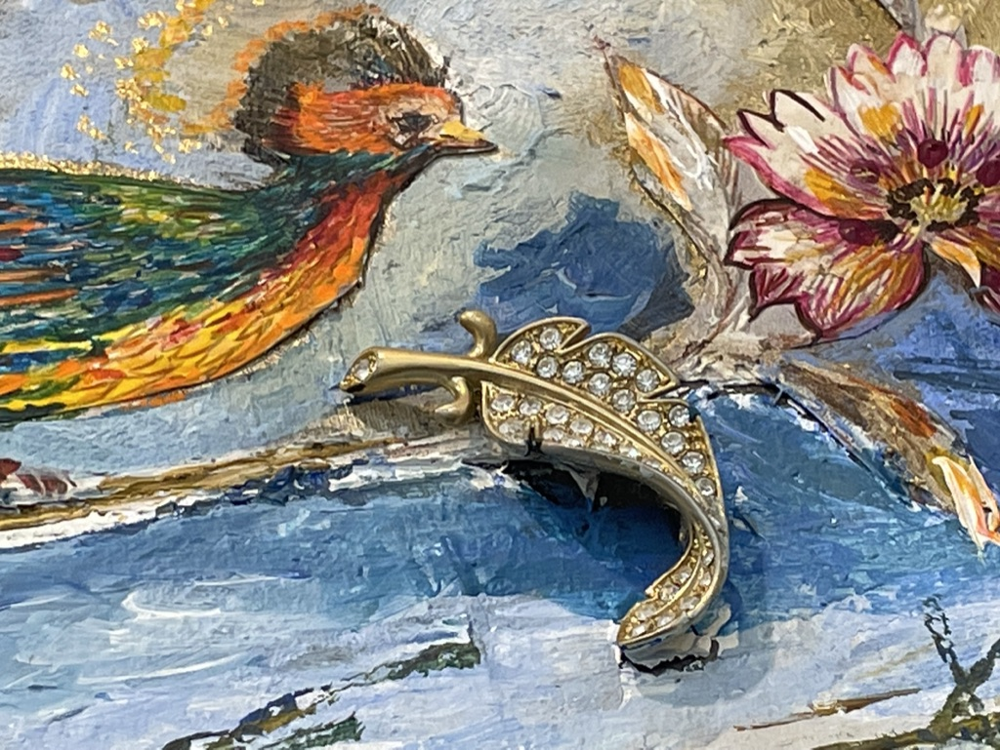
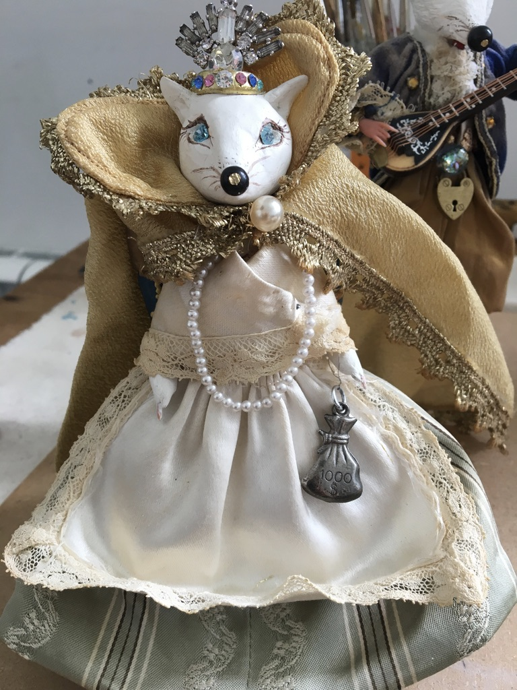
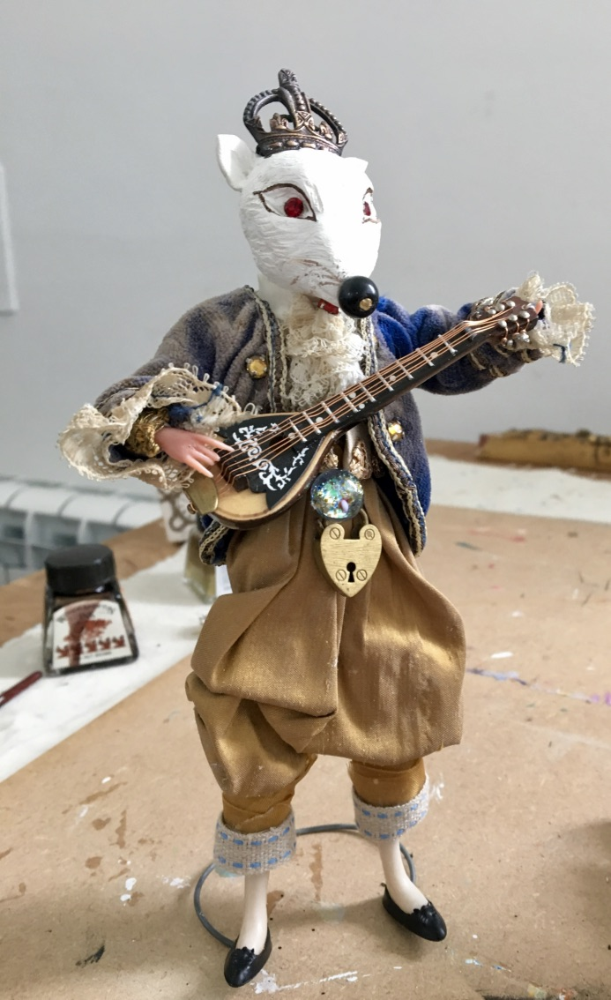
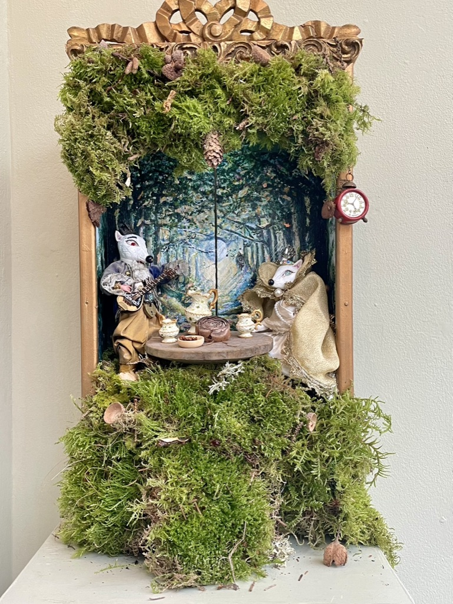
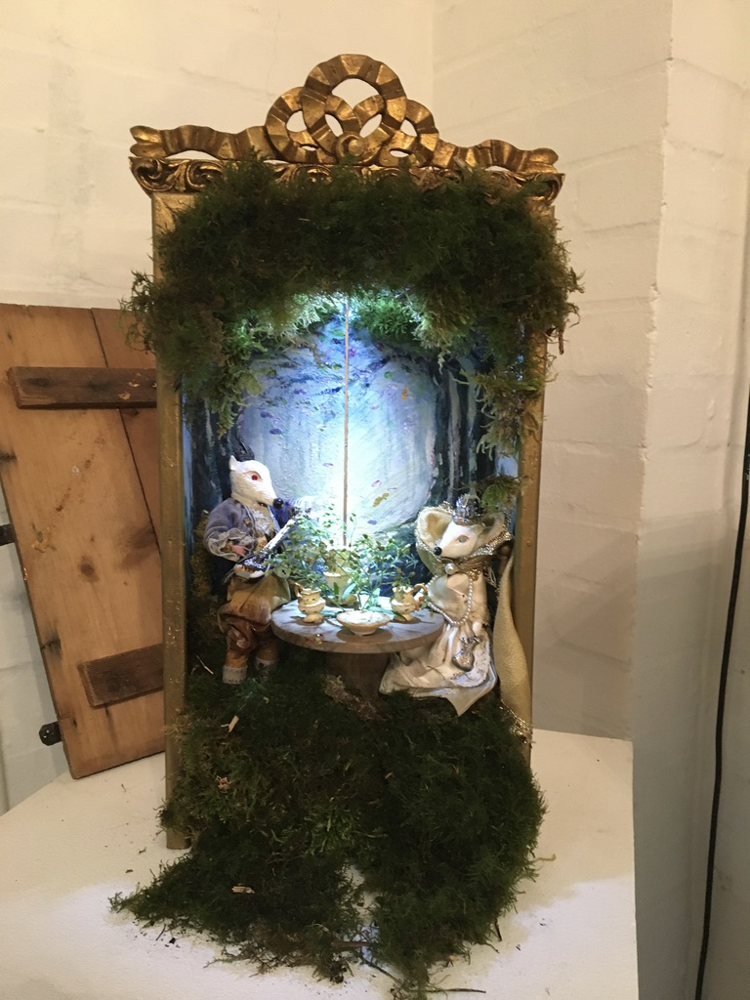
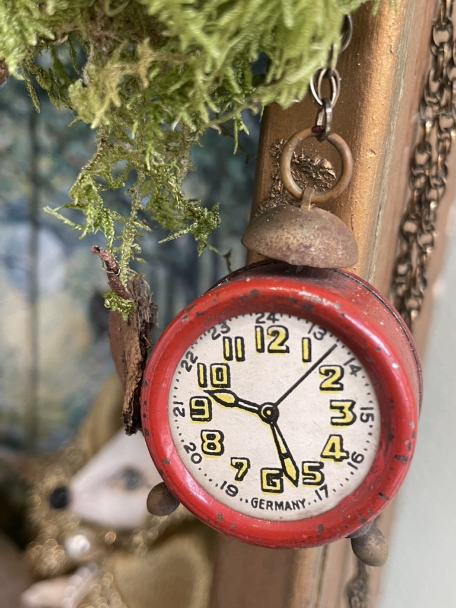

Art from ephemera
Letters, photographs, wrappers, labels, keepsakes and the tender evidence of a life.
Memory · material · meaning
Making beauty and meaning from the fragments we keep.
Nothing meaningful is wasted
The things we keep often carry more emotional weight than anything new.
Sacred Scraps began with letters, fragments, photographs, packaging, fabric, broken jewellery, buttons, old papers and inherited objects. Bobbi helps people use these pieces as starting points for meaningful mixed-media art.
The work is gentle, accessible and especially suited to beginners and hobbyists who may not believe they are creative. The emphasis is not on perfection. It is on memory, meaning, wellbeing and the quiet joy of making something beautiful from what might otherwise be forgotten.
Featured artwork: Plentiful Heart, acrylic & mixed media.
Letters, photographs, wrappers, labels, keepsakes and the tender evidence of a life.
Layering, colour, texture and composition taught with warmth and without intimidation.
Slowing down, using the hands and giving difficult or precious memories a new form.
Recycled, discarded and inexpensive pieces, from broken jewellery to found objects, become a rich creative vocabulary.
Every artwork can hold a story that belongs to its maker alone.
Gentle, step-by-step video projects are currently being developed.

Discarded jewellery & found objects
A single broken brooch, charm or overlooked object can change the whole feeling of a piece.
In Sacred Scraps, discarded jewellery and found objects are not used as decoration alone. They become clues, anchors and little flashes of remembered life, sitting alongside paint, texture, paper and personal fragments.
These materials bring their own histories with them: the glint of something once worn, gifted, tucked away or nearly thrown out. The work is about noticing that quiet charge and giving it a new place to belong.
Miniature assemblages
A light-hearted, playful installation can begin with an old box, keepsakes and discarded objects. With Milliput figures, old dolls' clothes, miniature dolls' furniture and tiny accessories, almost anything can become possible.
This piece was made for fun: a magical, whimsical little world for a local exhibition, using jewellery, crystal sparkly stones, fresh moss, elderberry florets gathered from the area around Bobbi's studio and a beautiful little clock that worked perfectly inside the scene.

Lace, pearls, discarded jewellery and theatrical fabric become a character with a story of her own.

Found trims, miniature objects and salvaged details bring personality and mischief into the piece.

The finished installation brings the figures, old box, moss, miniature tableware and little red clock together.

An old box becomes a moss-lined stage for handmade figures, miniature furniture, charms, light, crystals and woodland detail.

A found clock becomes a playful punctuation mark, adding scale, time and a flash of red.

A sacred fragment
One of Bobbi’s first miniature mixed-media and assemblage pieces was created from treasured keepsakes and family ephemera.
At its heart is a copy of her grandmother Charlotte’s 1901 letter, used as decoupage, alongside a tiny Snow White figurine from a vintage Christmas cracker — the sort of small object kept for years in a sideboard drawer full of “stuff”.
“Affectionately yours, Charlotte”
This is the spirit of Sacred Scraps: ordinary fragments, emotionally charged and easily overlooked, given a new place to live through art.